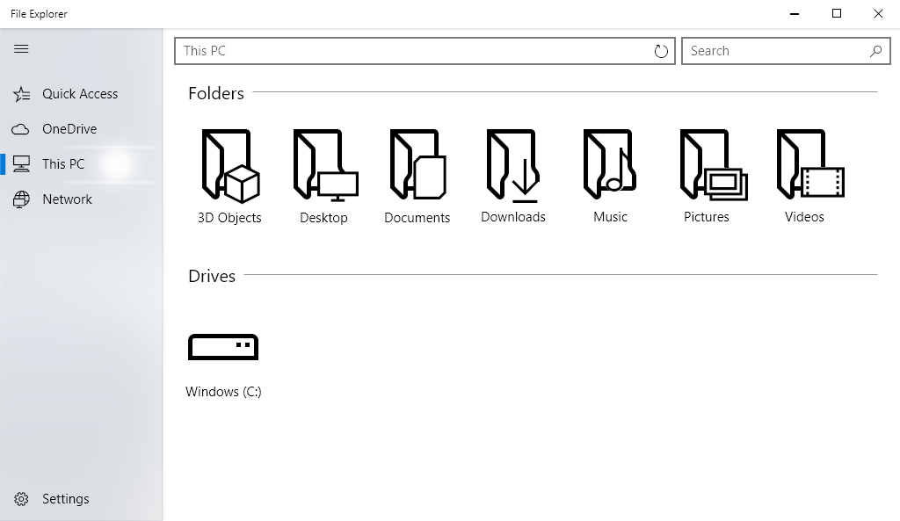

Fluent Design File Explorer
This is simply a personal exploration of the Fluent Design System introduced by Microsoft in 2017. I wanted to explore how the various requirements could be applied to a core part of the user experience in Windows 10: the File Explorer.
I wanted to focus on the features of the Fluent Design System that were easily marketable. "Reveal" adds discoverability to the interface by making the cursor a flashlight of sorts. As the user brings the cursor towards buttons or widgets that are interactive, the borders around those interactive elements reveal themselves to the user. "Acrylic" is the blurred material effect on the sidebar.